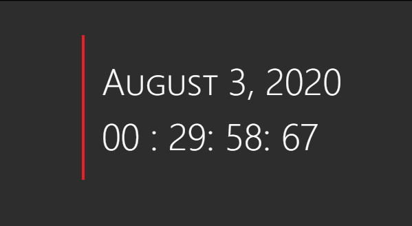
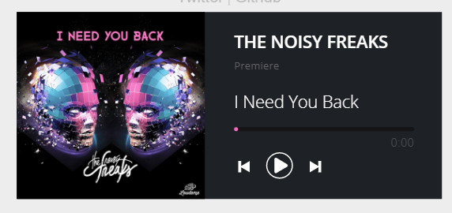
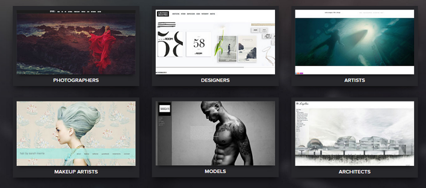
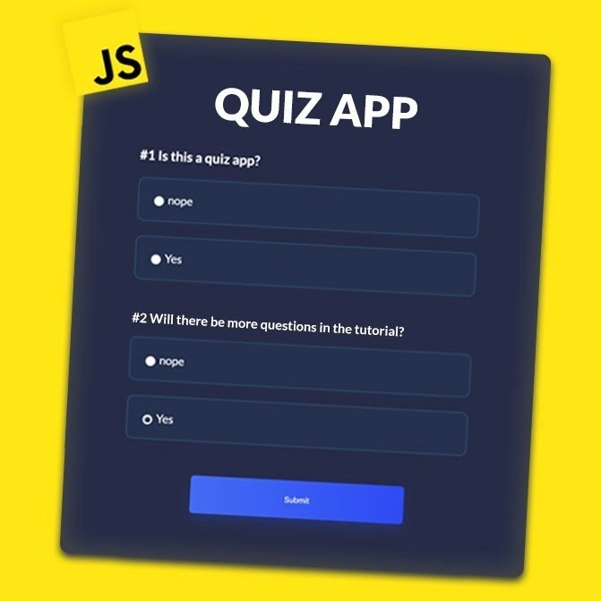
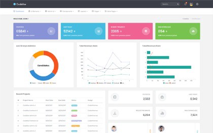

5 projects to get started as frontend developer

Most of the time you will be judged on the bases of skills you have and projects you have worked upon rather than scores on your report card, so you need to be very careful of the projects you put on your resume and the way you present them. The below-discussed projects are just a beginner’s guide towards the journey on frontend development. Later you will have to make many big and much more complex projects but I think these projects are good for getting you started.
Whether you know programming as just a beginner or you already have it practiced beforehand, we have made a list of top 5 projects you need to get hands-on while starting on as a frontend developer.
1. BUILD A JAVASCRIPT CLOCK
Building a clock is as easy as it sounds, you can have it made even in just a single line of code by extracting time from javascript or you can have a fully functional analog clock the same as that you have at home. Either way, working on this project is like taking baby steps towards working as a frontend developer.
We can also make different variants of clocks like a stopwatch or like a countdown timer or even an alarm clock.
Github Source Code: https://github.com/Ayushbajpai19/Clock-2.0
2. Build an Audio player
Audio apps are very common these days, while most audio apps we use nowadays stream songs online if we go sometime earlier people used to download songs in their desired formats and then play it on the app. A similar app can be made using Javascript by adding song files in code and then making an audio player environment.
Further, it can be modified and be made into maybe even an online song streaming app using APIs or a meditation ap
Github Source Code: https://github.com/Ayushbajpai19/Meditation-App-demo
3. Build a Personal Site
Nothing is better than showcasing your progress using your own portfolio website. One can easily make a single page simple portfolio website just by using HTML and CSS or one can even make his/her website using any framework like react or gatsby or even by using complex libraries like typed.js or matter.js. The perfect answer is, there are infinite possibilities to make your portfolio, the only limit is is your knowledge and your creativity.
Some popular frameworks used to make portfolio are:
- React
- Angular
- Gatsby
- Vue
4. Quiz App
You can also make a javascript quiz app as part of your learning project. It teaches you how to deal with events, manipulate the DOM, handle user input, give feedback to the user, and keep track of their score. And when you have a basic quiz up and running, there are a whole bunch of possibilities to add more advanced functionality, such as pagination, or adding animation every time one scores correctly.
5. Make a professional website using Bootstrap
Making a bootstrap website is always fun and less time-consuming. Bootstrap is a free and open-source CSS framework directed at responsive, mobile-first front-end web development. It contains CSS- and JavaScript-based design templates for typography, forms, buttons, navigation, and other interface components. Making a professional website will not only add weightage to your work experience on paper but later you can also sell it online on any freelance platform and earn some extra bucks for your next coffee date ;)
